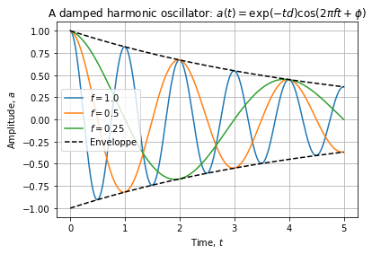

Scientific Python
Contents
Scientific Python¶
Python is versatile environment but it does not provide the right tools for scientific usage without some key packages:
NumPy (http://www.numpy.org/): improves dramatically python’s numerical analysis capabilities.
SciPy (https://www.scipy.org/): provides all classical scientific algorithm.
MatPlotLib (https://matplotlib.org/gallery/index.html: high quality scientific plotting.
Pandas (https://pandas.pydata.org/): fast and efficient data processing
A short introduction: plotting a function¶
# UNCOMMENT FOR INTERACTIVE PLOTS
#%matplotlib notebook
import numpy as np
import pandas as pd
import matplotlib.pyplot as plt
def func(t, damp=1.0, freq=1.0, phase=0.0):
"""
The solution of a second order linear ordinary differential equation:
func(t) = exp(-t * damp) * cos(2 * pi * f * t + phase)
Inputs:
* damp: dampening coefficient.
* freq: frequency
* phase: the phase of the signal
Ouput: data as a DataFrame for easier post processing.
"""
return pd.DataFrame(
{"a": np.exp(-t * damp) * np.cos(2.0 * np.pi * freq * t + phase), "t": t}
)
t = np.linspace(0.0, 5.0, 1001)
data = func(t, damp=0.1, freq=1.0)
data.head()
| a | t | |
|---|---|---|
| 0 | 1.000000 | 0.000 |
| 1 | 0.999007 | 0.005 |
| 2 | 0.997029 | 0.010 |
| 3 | 0.994070 | 0.015 |
| 4 | 0.990132 | 0.020 |
plt.figure(figsize=(8, 6))
for f in [1.0, 0.5, 0.25]:
data = func(t, damp=0.2, freq=f)
plt.plot(data.t, data.a, label="$f={0}$".format(f))
data = func(t, damp=0.2, freq=0)
plt.plot(data.t, data.a, "k--", label="Enveloppe")
plt.plot(data.t, -data.a, "k--")
plt.grid()
plt.legend(loc="best")
plt.xlabel("Time, $t$")
plt.ylabel("Amplitude, $a$")
plt.title(r"A damped harmonic oscillator: $a(t) = \exp(-t d) \cos (2 \pi f t + \phi)$")
plt.show()

Further readings: